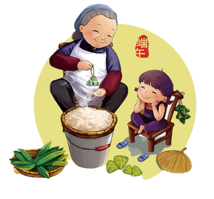

端午习俗
端午节在历史发展演变中杂揉了多种民俗为一体，全国各地因地域文化不同而又存在着习俗内容或细节上的差异。 端午习俗主要有扒龙舟、祭龙、采草药、挂艾草与菖蒲、食粽、放纸鸢、睇龙船、拴五色丝线、薰苍术、佩香囊等等。



端午节，又称端阳节、龙舟节、重五节、天中节等，是集拜神祭祖、祈福辟邪、欢庆娱乐和饮食为一体的民俗大节。 传说战国时期的楚国诗人屈原在五月初五跳汨罗江自尽，后人亦将端午节作为纪念屈原的节日；也有纪念伍子胥、曹娥及介子推等说法。 端午节的起源涵盖了古老星象文化、人文哲学等方面内容，蕴含着深邃丰厚的文化内涵，在传承发展中杂糅了多种民俗为一体， 各地因地域文化不同而又存在着习俗内容或细节上的差异。
端午节在历史发展演变中杂揉了多种民俗为一体，全国各地因地域文化不同而又存在着习俗内容或细节上的差异。 端午习俗主要有扒龙舟、祭龙、采草药、挂艾草与菖蒲、食粽、放纸鸢、睇龙船、拴五色丝线、薰苍术、佩香囊等等。